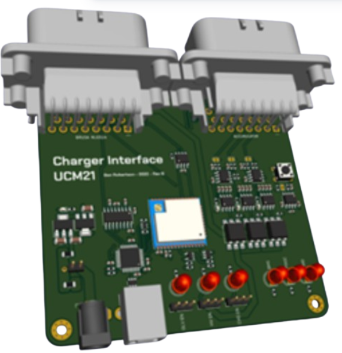

Embedded Systems | Formula SAE
UCM Battery Charge Display System
What?
Designed and built a real-time battery charge display system for the UCM Formula SAE charging unit, giving the team direct visibility of charging data without needing external tools.
How?
Developed a 4-layer custom PCB around an ESP32-S3, integrated CAN-bus decoding, and displayed high-precision voltage and temperature readings on a 16x2 LCD. The design was reported as meeting the UCM team requirements and FSAE-A 2025 rules, with live data refresh rates up to 30 fps.